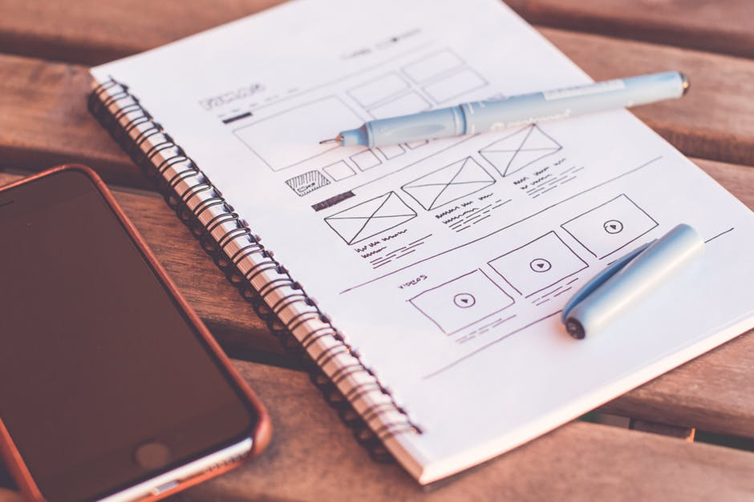

Kansas City Graphic Designer
Hello there! I'm Megan!
As a graduate of the University of Central Missouri, I have been designing professionally since 2011. Unofficially, I have been designing since I was a child. That nerdy kid who made fake PR kits and promotional materials? Yeah, that was me. I'm fortunate to work in a field I truly enjoy. I like to keep my skills sharp and I spend a considerable amount of time each year furthering my education. This time might be spent learning an efficient new design skill or researching the lastest SEO trends and deciphering where my client's market is going. As an active member of the American Advertising Federation and Professional Photographers of America, I also like to connect with members of the local design community.
Why does good design matter?
Let's make money together in a sustainable way. Graphic designers have a unique opportunity to drive sales and captivate the consumer. We can create company influence and modify public opinion. We are far more than a team of "artists." We are the dream seekers, the tech chasers and the face behind the billboard...and we have a responsiblity to do something kind and ethical, while maintaining great relationships with our clients. I am a passionate graphic designer and I look forward to working with you.
Recent Blog


Make website from scratch
Separated they live in Bookmarksgrove right at the coast of the Semantics, a large language ocean.